Nutzung
Dieser Artikel wurde für die folgenden Ubuntu-Versionen getestet:
Ubuntu 16.04 Xenial Xerus
Zum Verständnis dieses Artikels sind folgende Seiten hilfreich:
- Bedienelemente auf dem Bildschirm
- Vorbereitung
- Audio-Bearbeitung: Schnitt
- Produktion
- Einbau von Plugin-Effekten in ein Projekt
- Export der fertigen Gesamtdatei
- Vorbereitung für den Dateitransfer
- Zur Frage der Ardour-Tonqualität
- Links
 Dieser Artikel enthält eine Anleitung, um Ardour in einem für Digital Audio Workstations wichtigen Bereich, nämlich in der Produktion von Podcasts oder Radiobeiträgen mit Originalton- und Musik- oder Geräuscheinblendungen einzusetzen. Nach diesem Verfahren lassen sich auch längere Features oder Hörspiele produzieren.
Dieser Artikel enthält eine Anleitung, um Ardour in einem für Digital Audio Workstations wichtigen Bereich, nämlich in der Produktion von Podcasts oder Radiobeiträgen mit Originalton- und Musik- oder Geräuscheinblendungen einzusetzen. Nach diesem Verfahren lassen sich auch längere Features oder Hörspiele produzieren.
Am Ende steht eine Datei im Format RIFF WAVE, MP3 o.ä., die man direkt über das Internet transferieren oder dort hochladen kann. Ardour wird in der professionellen Arbeit bislang zwar selten genutzt, aber zu Unrecht, denn es erfüllt viele dortige Anforderungen und kann deshalb eine Alternative zu teuren proprietären Programmen sein.
Die Arbeitsweise vom unbearbeiteten Material bis zur fertigen Podcast-Datei wird im folgenden Schritt für Schritt erläutert. Unabhängig vom Arbeitsbereich Radio/Podcast erläutert der Artikel die grundsätzliche Ardour-Handhabung bei Audio-Schnitten, -Mischungen und -Blenden.
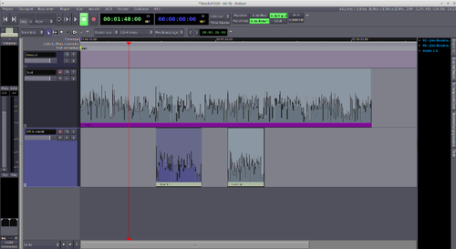
Hinweis:
Im März 2013 wurde Ardour 3 freigegeben  , im April 2015 das diesem in der Handhabung ähnliche Ardour 4; 2016 nun folgte Ardour 5. Ardour 4 und 5 sind technisch deutlich verbessert, sodaß man ihnen gegenüber der Version 3 den Vorzug geben sollte. Je nach Ubuntu-Version findet man in den Paketquellen unterschiedliche Ardour-Versionen: bei Ubuntu 12.04 beispielsweise beinhalten sie noch Ardour 2, während man unter Ubuntu 16.04 bereits Ardour 4 zur Verfügung hat. Ardour 3, 4 und 5 unterscheiden sich in ihrer Handhabung nur wenig. Weitere Einzelheiten zur Arbeit mit Ardour in diesen Versionen enthält der einschlägige Wiki-Grundlagenartikel
, im April 2015 das diesem in der Handhabung ähnliche Ardour 4; 2016 nun folgte Ardour 5. Ardour 4 und 5 sind technisch deutlich verbessert, sodaß man ihnen gegenüber der Version 3 den Vorzug geben sollte. Je nach Ubuntu-Version findet man in den Paketquellen unterschiedliche Ardour-Versionen: bei Ubuntu 12.04 beispielsweise beinhalten sie noch Ardour 2, während man unter Ubuntu 16.04 bereits Ardour 4 zur Verfügung hat. Ardour 3, 4 und 5 unterscheiden sich in ihrer Handhabung nur wenig. Weitere Einzelheiten zur Arbeit mit Ardour in diesen Versionen enthält der einschlägige Wiki-Grundlagenartikel
Bedienelemente auf dem Bildschirm¶
Von den vielen Möglichkeiten und Bedienelementen, die der Ardour-Bildschirm zu bieten hat, werden hier nur einige benötigt: oben halblinks die "Laufwerkstasten" für Wiedergabe, Aufnahme etc. Rechts davon die Zeitanzeigen: Am wichtigsten ist die linke, die sog. "primäre" (grün), die "sekundäre" rechts (blau) wird nur hilfsweise benötigt. Ganz links liegt der Kanalzug für die jeweils angeklickte Spur ("Mixer-Panel"), rechts davon die Bedienfelder für die Spuren. Der große Bereich in der Mitte ist der Editor, in dem man das Tonmaterial bearbeitet.
Vorbereitung¶
Am Beginn steht eine elementare Frage: die Abtastfrequenz, mit der in Ardour gearbeitet werden soll. Grundsätzlich ist eine breite Skala wählbar; für Material, das später im MP3-Format über das Internet verbreitet werden soll, ist es allerdings wenig sinnvoll, höhere Frequenzen als 48 kHz zu wählen. Diese 48-kHz-Frequenz ist gut geeignet; bei Projekten mit großen Mengen von CD importierten Materials können 44,1 kHz leichter zu handhaben sein, weil man dann nicht alles im Vorfeld auf 48 kHz umformen muss. Beim Export kann Ardour das Endresultat in jedem Falle in die gewünschte Frequenz umformen.
Hinweis:
Ab Ardour 3 ist man in der Entscheidung über die Samplingfrequenz etwas freier; denn hier wurden Umformungsfunktionen beim Audioimport weiter verbessert. Man kann also deutlich zügiger z.B. 44,1-kHz-Material, das von einer CD stammt, in ein 48-kHz-Projekt importieren. Allerdings läuft der eigentliche Umformungsprozess im Soundconverter wesentlich schneller ab.
Die Frequenz wählt man bei Ardour 2 und 3 vor dessen Start in Qjackctl im Fenster “Einstellungen“. Ab Ardour 4 kann man die Frequenz auch nach dem Start im ersten Fenster wählen: wo man die Entscheidung trifft, ob Ardour über JACK oder ALSA eingebunden werden soll.
Danach ist es sinnvoll, einige Menüpunkte in Ardour so zu justieren, dass sie die zügige Produktion erleichtern:
Voreinstellungen in Ardour 2¶
Im Menü “Ansicht“ den Punkt “Fades anzeigen“ aktivieren.
Im Menü “Optionen > Crossfades“ auf “Aktiv“, “Anzeigen“ und “Automatisch erzeugen“ schalten. Außerdem auf “Gesamte Überlappung“. Das beschleunigt die Arbeit beim Schneiden.
Die Funktion “Optionen -> Sonstiges -> Spurauswahl folgt Auswahl der Region“ sollte deaktiviert sein.
Um das Blenden etwas komfortabler zu gestalten, kann man sich links den Mischpult-Kanalzug der jeweils aktivierten Spur einblenden lassen: “Ansicht -> Mixer-Panel zeigen“ bzw. ⇧ + E - auf dem Bildschirm erscheint ein Kanalzug mit zugehöriger Pegelanzeige. Alternativ kann man auch mit “Fenster -> Mixer anzeigen“ das komplette Mischpultfenster auf den Bildschirm holen.
Im Menü “Optionen -> Pegelanzeigen“ sollte man den Punkt “Aktiviere Pegelanzeigen im Editor“ einschalten, um schneller zu erfassen, welche Spur man gerade abhört.
Zusätzlich kann man noch oben rechts auf “Auto Return“ schalten. Dies vereinfacht ein mehrfaches Probehören einzelner bearbeiteter Audio-Passagen.
Voreinstellungen in Ardour 3, 4 und 5¶
Infolge einiger geänderter Details in der Bedienung und im Verhalten bei Überblendungen sehen auch diese Schritte in Ardour 3 und 4 etwas anders aus:
Über das Menü "Bearbeiten > Globale Einstellungen" öffnet sich ein Fenster "Ardour Einstellungen", in dem man auf der Registerkarte "Editor" ggf. den Haken vor "Auswahl von Spuren und Regionen verbinden" entfernen sollte.
Dort sollte auch die Option "Aktiviere Pegelanzeigen im Editor" aktiviert sein.
Um das Blenden etwas komfortabler zu gestalten, kann man sich links den Mischpult-Kanalzug der jeweils aktivierten Spur einblenden lassen: “Ansicht -> Mixer-Panel zeigen“ bzw. ⇧ + E - auf dem Bildschirm erscheint ein Kanalzug mit zugehöriger Pegelanzeige. Alternativ kann man auch mit “Fenster -> Mixer“ das komplette Mischpultfenster auf den Bildschirm holen.
Zusätzlich kann man noch oben links der ersten Zeitanzeige auf “Auto Return“ schalten (alternativ mit der Taste 6 ). Dies vereinfacht ein mehrfaches Probehören einzelner bearbeiteter Audio-Passagen, weil der Tonkopf beim Stoppen immer wieder zur vorherigen Ausgangsposition zurückspringt.
In Ardour 5 lässt sich das Einstellungsfenster nun zusätzlich über einen Taster "Einstellungen" oben rechts aufrufen.
Vorbereiten des Audiomaterials¶
Nun bringt man das externe Material in den Rechner: seien es Originaltöne (O-Töne), Geräusche oder Musik: je nach der Form, in der sie vorliegen, als fertige Datei, von CD importiert (z.B. mit Asunder) oder (per Aufnahme in Ardour) eingespielt von DAT, Band, Platte etc. Gleiches geschieht mit Musik oder Geräuschen, die eingeblendet werden sollen.
Audio-Bearbeitung: Schnitt¶
Jetzt öffnet man Ardour und legt ein neues Projekt mit zwei Mono-Spuren an. Auf die Spur 1 importiert man mit dem Menüpunkt “Projekt -> Importieren“ oder per Strg + I das externe Material - zum Beispiel ein ungeschnittenes Interview. Spur 1 für das Hören auf "Solo"-Wiedergabe schalten.
Auswahl der Originaltöne¶
Nun wird der O-Ton abgehört. Jede Passage, die man weiterverarbeiten möchte, kopiert man direkt als separaten Ausschnitt in die Spur 2. Dazu mit  links oben in der Leiste auf das Feld “Editierbereich auswählen/verschieben“ klicken und dann die gewünschte Passage mit Mausziehen bei gedrückter markieren. Zum Kopieren
Strg +
C drücken.
links oben in der Leiste auf das Feld “Editierbereich auswählen/verschieben“ klicken und dann die gewünschte Passage mit Mausziehen bei gedrückter markieren. Zum Kopieren
Strg +
C drücken.
Spur 2 durch einen Linksklick aktivieren und zum Einfügen
Strg +
V drücken. Damit kopiert sich der Ausschnitt in die Spur 2. Wenn man den O-Ton abgehört hat, liegt in Spur 2 also eine ungeschnittene grobe Auslese.
Schnitt der O-Töne¶
Die Ausschnitte schneidet man als nächstes „sauber“, befreit sie also von Versprechern und ähnlichem. Außerdem ist dies der Zeitpunkt, sie bei Bedarf sinnwahrend zu kürzen.
Vorbereitung mit Ardour 2¶
Der Übersichtlichkeit halber klickt man
die Spur 2 an und setzt sie mit dem Menü “Spur -> Höhe“ auf “Am größten“. Dadurch wird das Schneiden wesentlich komfortabler. Außerdem schaltet man "Solo" bei Spur 2 ein und bei Spur 1 aus.
Im Menü "Optionen > Crossfades" schaltet man "Aktiv", "Anzeigen" und "Automatisch erzeugen" ein. Außerdem die Option "Gesamte Überlappung": Das bewirkt, daß Ardour dort, wo man zwei Regionen übereinanderschiebt, nicht schlagartig zur zweiten Region wechselt, sondern zwischen den Regionen eine weiche Überblendung vollzieht. Das ist ein nützlicher Trick, um Schnitte "schwerer hörbar" zu machen; derselbe Trick, nachdem man in Analog-Zeiten ein Band nicht senkrecht, sondern immer etwas schräg zur Laufrichtung schnitt.
Nun geht es um den sog. Arbeitspunkt: also sozusagen den heißen Punkt, mit dem man bestimmt, an welcher Stelle im Projekt etwas passieren soll. Im Menü "Bearbeiten > Editing Modes" schaltet man auf "Arbeitspunkt ändern". Damit bestimmt nicht mehr die Lage des roten Tonkopfes den Arbeitspunkt, sondern die Lage des Mauszeigers. Das hat den Vorteil, dass man den Tonkopf nicht ständig hin- und herschieben muss.
Zum eigentlichen Schnitt schaltet man nun in den "Objekt-Modus (Objekte auswählen/verschieben)".
Vorbereitung ab Ardour 3¶
Die Vorgehensweise mit den neuen Programmversionen unterscheidet sich prinzipiell nicht von derjenigen mit Ardour 2, aber einige Details haben sich verändert.
Die Höhe einer Spur läßt sich durch einfaches Drag & Drop mit der
bestimmen.Auch hier schaltet man "Solo" bei Spur 2 ein und bei Spur 1 aus.
Die Möglichkeit der automatischen Kreuzblende bei überlappenden Regionen ist entfallen. Deshalb verlangt der Audioschnitt etwas andere Handgriffe.
Im Menü "Bearbeiten > Arbeitspunkt" empfiehlt es sich zur Vorbereitung, "Arbeitspunkt ändern (auch auf Marker wechseln)" zu wählen. Damit bestimmt nicht mehr die Lage des roten Tonkopfes den Arbeitspunkt, sondern die Lage des Mauszeigers.
Zur besseren Kontrolle kann man außerdem mit einem Rechtsklick
 auf die sekundäre Zeitanzeige ein Menü öffnen und dort "Zeige Abstand zum Arbeitspunkt" markieren.
auf die sekundäre Zeitanzeige ein Menü öffnen und dort "Zeige Abstand zum Arbeitspunkt" markieren.Zum eigentlichen Schnitt schaltet man auch hier in den "Objekt-Modus (Objekte auswählen/verschieben)".
Als Schnittwerkzeug dient jetzt der Mauszeiger, der zusätzlich einen senkrechten Strich aufweist.
Hinweis:
Auf Wunsch kann man links oben mit den Taster unterhalb der Laufwerkstasten den "Smart-Modus" einschalten. Dann wechselt der Mauszeiger zwischen zwei Modi: im unteren Teil einer Region befindet er sich im "Objekt-Modus" - inzwischen auch "Greif-Modus" genannt -, im oberen Teil einer Region wechselt er in den "Bereichs-Modus", mit dem man Zeitbereiche auswählen kann. Damit erspart man sich lästiges Hin-und-Herschalten.
Nun die Ausschnitte abhören. Hat man eine Passage gefunden, die man herausschneiden möchte, so markiert man die Region im Objekt-Modus durch einen Mausklick, setzt dann den Mauszeiger an das Ende dieser Passage und drückt S . Damit wird die betreffende Region dort aufgetrennt; zwei aneinandergrenzende Regionen sind entstanden.
Der Beginn der zweiten Region ist durch den Schnitt schon einmal bestimmt; um das Ende der ersten Region (die vor dem Schnitt liegt) festzulegen, bewegt man den Mauszeiger über den Schnitt und etwas nach links, sodass sich der Zeiger in einen waagrechten Pfeil und eine nach links offene eckige Klammer verwandelt. Damit kann man durch Ziehen mit gedrückter linker Maustaste das Ende der ersten Region bestimmen - und so die Länge der herauszuschneidenden Passage festlegen.
Zuletzt bewegt man den Mauszeiger auf die zweite Region. Der Zeiger verwandelt sich in eine Hand. Mit einem Mausklick markiert man die Region und zieht sie dann mit gedrückter so an die erste Region heran, dass die Stelle gut "klingt".
| 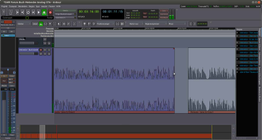 |
| Ende der ersten Region bestimmen |
| 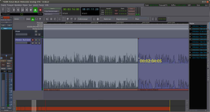 |
| Heranziehen der zweiten Region |
| 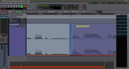 |
| Kreuzblende zwischen den Regionen |
| 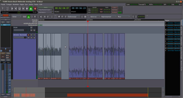 |
| Mehrere Regionen zum Bewegen markiert |
Beim bündigen Aneinandersetzen zweier Regionen kann sich manchmal an der Übergangsstelle ein Knacken ergeben. Das kann man vermeiden, indem man die zweite Region mit gedrückter ein klein wenig nach vorne verlängert, sodass sie das Ende der ersten Region überlappt.
| 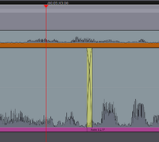 |
| Fertiger, durch kurze Überlappung nicht mehr hörbarer Schnitt |
Ardour 2 setzt, wie oben beschrieben, über die Überlappung hinweg eine automatische Kreuzblende.
In Ardour 3, 4 und 5 setzt man an der überlappenden Stelle abermals mit gedrückter
eine kurze Blende: Man setzt dazu den Mauszeiger auf das Viereck in der linken oberen Ecke der Region; der Zeiger verwandelt sich in einen nach rechts unten offenen hellen Bogen, der eine Blende symbolisiert. Jetzt zieht man das kleine Viereck vorsichtig nach rechts und kann den Blendbereich (farblich unterlegt) sehen. Weniger als 50 ms Überblendzeit reichen im Normalfall bereits. In den meisten Fällen ist der Knack damit verschwunden.
Faustregel bei Geräuschkulisse während des Interviews: Den Anfang des O-Tons hart am Wortbeginn schneiden; hinten die Geräuschkulisse im Modus "Objekte auswählen/verschieben" per Mausziehen abblenden, damit es nicht abgehackt klingt.
In dem Sinne arbeitet man sich also von vorn bis hinten durch die Ausschnitte auf der Spur 2 durch, bis man sie alle sauber geschnitten hat. Spätestens jetzt sollte man in jedem Falle einen „Schnappschuss“ speichern (Menü “Projekt -> Schnappschuss (& in dieser Version weiterarbeiten)“), um die Ergebnisse zu sichern.
Möchte man einen Schnitt nachträglich vornehmen oder korrigieren (wenn also hinter der zu schneidenden Stelle schon viele weitere Schnitte liegen, die man so erhalten möchte, wie sie sind), so ist die Handhabung prinzipiell die beschriebene. Nur muss man daran denken, anstelle der oben erwähnten "zweiten Region" alle hinter dem Schnitt liegenden Regionen zu bewegen - denn sonst verändert sich ungewollt etwas im dahinterliegenden Bereich der Spur. Um alle betroffenen Regionen zu markieren (und sie danach en bloc verschieben zu können), markiert man mit einem Klick die betreffende Spur, setzt danach den Mauszeiger (damit den Arbeitspunkt) auf die erste zu verschiebende Region. Mit der Tastenkombination Strg + ⇧ + E werden jetzt alle hinter dem Arbeitspunkt liegenden Regionen der Spur markiert - und können danach verschoben werden.
Produktion¶
Zur Vorbereitung ist es im Interesse der Übersichtlichkeit auf dem Bildschirm sinnvoll, die Spur mit dem unbearbeiteten Interview mit “Spur -> Ausgewählte Spuren nach unten verschieben“ (alternativ mit Strg + ↓ ) ganz nach unten zu verschieben und sie mit "Mute" stummzuschalten. Alternativ kann man sie auch deaktivieren (was Rechenleistung spart) oder ganz löschen.
Vorsortieren der O-Töne¶
Für die Produktion sollte man zunächst Ordnung in die O-Töne auf Spur 2 bringen: Meist passen nicht alle in den Beitrag hinein, man muss sie kürzen, oder ihre Reihenfolge muss verändert werden.
Als erstes die Auswahl: Eine leere Monospur 3 anlegen. Sie ist gedacht für die O-Töne, die man in den Beitrag übernimmt. "Solo" bei Spur 2 ausschalten.
Spur 2 mit
anklicken, dann oben auf "Editierbereich auswählen / verschieben" schalten und per Mausziehen den Editierbereich über alle vorhandenen O-Töne legen (s. Abb.).
Strg +
C drücken.Spur 3 aktivieren und Strg + V drücken. Damit sind die O-Töne alle in der Spur 3 gedoppelt. Jetzt Spur 3 auf "Solo" schalten und alle O-Töne herauslöschen, die man für den Beitrag nicht braucht.
| 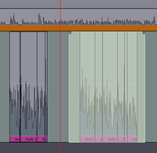 |
| Editierbereich (hell), über die Regionen eines O-Tons gelegt |
Dann zur Reihenfolge. Im folgenden Beispiel stehen die O-Töne 3, 2 und 1 auf Spur „Audio 2“ in umgekehrter Reihenfolge, wie man sie später braucht.
Ardour bietet nun in der Handhabung zwei Möglichkeiten, um mehrere Regionen en bloc zu markieren, die man im Anschluss verschieben oder in anderer Weise bearbeiten möchte.
Objekt-Lasso: Man wählt den Objekt-Modus "Objekte auswählen/verschieben" und bewegt dann den Mauszeiger links vor die zu markierenden Regionen. Nun drückt man die
und bewegt die Maus dann bis hinter das Ende der letzten zu markierenden Region. Maustaste loslassen: alle soeben mit der Maus berührten Regionen sind markiert.
Arbeit mit dem Editierbereich: In diesem Verfahren klickt man zunächst oben links in der Leiste auf den Modus "Editierbereich auswählen / verschieben". Dann mit gehaltener
über den O-Ton 1 einen Editierbereich legen. Nun “Bearbeiten -> Auswahl -> Alle Regionen des Bearbeitungsbereichs auswählen“ klicken (zugehörige Tastenkombination
Strg +
U ). Damit sind alle Regionen im Editierbereich markiert.
In unserem Beispiel sind jetzt also alle Regionen markiert, aus denen der O-Ton 1 besteht. Nun in der Leiste (falls nicht schon geschehen) auf "Objekte auswählen / verschieben" klicken. Jetzt kann man den O-Ton per Maus in der Spur nach vorn ziehen. In ähnlicher Weise rangiert man die restlichen O-Töne, bis deren Reihenfolge stimmt.
Im Interesse der Übersichtlichkeit: Die nicht mehr benötigte Spur 2 mit der „Gesamtauswahl“ aller O-Töne kann man jetzt, ähnlich wie vorher Spur 1, nach unten verschieben, stummschalten oder (um Rechenleistung zu sparen) deaktivieren – oder löschen.
Falls O-Töne gekürzt werden müssen, ist jetzt der Zeitpunkt dafür: Die Handhabung vollzieht sich wie oben beim ersten Schnitt.
Aufnahme und Schneiden der Autorentexte¶
Meistens gehören zu einem Podcast oder ähnlichen Projekt auch eigene Texte. Die kann man jetzt aufnehmen: am besten auf einer separaten Mono-Spur. Saubergeschnitten wird die Aufnahme nach derselben Methode wie die O-Töne. Zuletzt hat man also zweierlei: auf einer Spur die saubergeschnittenen O-Töne, auf der anderen Spur die saubergeschnittenen einzelnen Autorentexte.
Hinweis:
Ardour lässt einem die Wahl, mit welchem Abtastformat man eine Aufnahme machen möchte. Die Auswahl trifft man in Ardour 2 im Menü "Optionen -> Audio-Dateiformat -> Sampleformat", ab Ardour 3 im Menü "Projekt -> Projekteinstellungen -> Medien". 16 Bit entsprechen der klassischen CD; 24 Bit bieten demgegenüber einige Vorteile beim Klang und besonders beim Störabstand. 32 Bit sind wohl nur sinnvoll, wenn man eine Audiokarte nutzt, die dafür gleichfalls geeignet ist. Im Hinterkopf behalten sollte man, daß eine 32-Bit-Aufzeichnung doppelt soviel Speicherplatz verbraucht wie eine ebensolange Aufnahme mit 16 Bit.
Anordnen von Autorentexten und O-Tönen¶
Das alles bringt man jetzt in die gewünschte Reihenfolge Text/O-Ton/Text/O-Ton etc. (siehe Abb.). Markieren und Verschieben laufen nach demselben Verfahren wie vorhin das Sortieren der O-Töne. Wichtig: Übergänge zwischen Texten und O-Tönen abhören, damit dort klanglich alles stimmt.
| 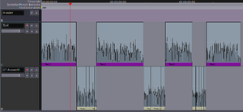 |
| Texte und O-Töne auf zwei Spuren fertig angeordnet |
Hinweis:
An sich ließen sich Texte und O-Töne auch auf einer Spur zusammensetzen, aber mit getrennten Spuren für O-Töne und Texte ist es übersichtlicher. Sobald man O-Töne am Ende (wegen Hintergrundgeräuschen) leicht blenden muss, braucht man ohnehin zwei Spuren. Denn man muss die Texte auf die ausgeblendeten Hintergrundgeräusche legen.
Angleichen der Lautstärke¶
Die Lautstärke der einzelnen Autorentexte und der O-Töne sollte nicht in störendem Maße voneinander abweichen (aus dem einfachen Grunde, dass der Hörer sonst permanent am Lautstärkeregler zugange ist). Im allgemeinen ist es das einfachste, sich mit der Gesamtlautstärke nach der des Autorentextes zu richten, denn der dürfte im allgemeinen gleichmäßig laut gesprochen sein. Sofern die Autorentexte keine starken Lautstärke-“Ausreißer“ enthalten, braucht man also nur die O-Töne anzugleichen.
Bei diesem Lautstärkeabgleich sollte vor allem das kritische Ohr entscheiden. Auf das Ablesen von Aussteuerungsanzeigen kann man sich nur sehr bedingt verlassen. Es kommt darauf an, dass beim Hören keine störenden Lautstärkeunterschiede oder gar -sprünge auffallen.
Lautstärkeabgleich gesamter Regionen¶
| 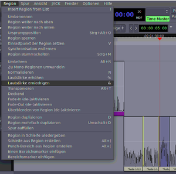 |
| Pegelkorrektur einer Region. |
Den Pegel einer oder mehrerer Regionen ändern kann man, indem man die betreffenden Regionen im Modus "Objekte auswählen/verschieben" per (oder wie beschrieben per Markieren und “Bearbeiten -> Auswahl -> Alle Regionen im Bearbeitungsbereich auswählen“) auswählt. Dann den Pegel per Menü “Region -> Lautstärke erhöhen“ bzw. “erniedrigen“ korrigieren (s. Abb.).
Im rechts abgebildeten “Region“-Menü sieht man auch die Tasten, mit denen das noch schneller geht: & für niedrigere und % für höhere Lautstärke.
Hinweis:
„Ab Werk“ sieht Ardour 2 für höhere Lautstärke die Taste ^ vor – was auf einer deutschen Tastatur nicht funktioniert. Das kann man aber selbst verändern, indem man den Mauszeiger auf den betreffenden Menübefehl legt und dann selbst eine Taste (oder Tastenkombination) drückt, die man dem Befehl zuordnen möchte.
Stärkere Pegelanhebungen lassen sich auf die beschriebene Weise allerdings nicht vornehmen; dazu muss man in Ardour 2 mit auf die Region klicken und im Menü “Region-Editor“ wählen. Dort kann man den Pegel mit “Scale Amplitude“ einstellen. In Ardour 3, 4 und 5 klickt man auf die Region und ruft "Eigenschaften..." auf. Dort findet sich das Feld "Regionen-Lautstärke" mit der Maßeinheit dB.
Absenken störender Lautstärkespitzen¶
Es kann durchaus vorkommen, dass die Lautstärke einer Region in ihrer Gesamtheit stimmig ist, dass aber eine einzelne Silbe besonders laut heraussticht. Diese Silbe sollte man in der Lautstärke absenken. Abermals ist das Ohr der wichtigste Maßstab. Parallel kann man sich hier auch an der Lautstärke-Hüllkurve orientieren. Sollte eine Lautstärkespitze die 0-dB-Grenze überschreiten, muss man sie in jedem Falle absenken, damit es keine Verzerrungen gibt.
Diese kurzzeitige Pegelabsenkung vollzieht man manuell: Zunächst die betreffende Spur aktivieren und auf "Solo" schalten. Dann im Spurfenster das Feld “a“ für das Menü “Automationen -> Fader“ drücken. Ein kleines Zusatzfenster öffnet sich unterhalb. Dort steht rechts in Feld "Wiedergabe": auf dieses Feld mit klicken. Es klappt ein Menü auf, in dem man von "Wiedergabe" auf "Manuell" umschaltet.
Rechts von diesem Fenster liegt nun der Inhalt der Spur als Lautstärke-Hüllkurve in einer farblich abgeänderten Form. Die Höhe dieser (Zusatz-)Spurdarstellung kann man verändern: bei Ardour 2 nach ins blaue Feld links im Menüpunkt “Höhe“. Bei Ardour 3, 4 und 5 zieht man mit die Spur in die gewünschte Höhe.
Vorgehen mit Ardour 2¶
Sobald man den Mauszeiger in die Spur hineinbewegt, verwandelt sich dieser in ein Kreuz, mit dem man per einzelne Lautstärke-Punkte setzen kann. Unmittelbar vor der Lautstärkespitze den ersten Punkt setzen.
Sobald man nun den Mauszeiger auf diesen Punkt legt, verwandelt sich das Kreuz in einen Pegelregler. Ferner erscheint in gelben Zahlen der dB-Wert des Punktes. Da dieser noch vor der Lautstärkespitze im pegelmäßig „normalen“ Teil des Textes liegt, sollte man den Punkt auf 0,0 dB einstellen. Dann einen zweiten Punkt hinter die Lautstärkespitze setzen und ebenso auf 0,0 dB einstellen. Hat man einen Punkt falsch gesetzt: den Mauszeiger darauf setzen und Entf drücken.
| 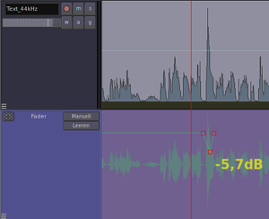 |
| Absenken einer Lautstärkespitze in Ardour 2 |
Nun genau auf dem Zeitpunkt der Lautstärkespitze einen dritten Punkt unterhalb der beiden anderen Punkte setzen. In diesem ersten Schritt sollte er etwa bei -5 dB sitzen.
Jetzt mit auf das Feld "Manuell" klicken und im Menü wieder auf "Wiedergabe" umschalten. Den Positionszeiger kurz vor die bearbeitete Stelle setzen. Mit
die Wiedergabe starten und kritisch daraufhin abhören, ob die Lautstärkeabsenkung zu stark oder zu schwach ist. Ggf. mit und Mausziehen den Lautstärkepunkt für die Absenkung verschieben. Falls die Absenkung zu lang oder zu kurz ist, die beiden 0,0-dB-Punkte entsprechend verschieben.
Vorgehen mit Ardour 3, 4 und 5¶
Hier bieten sich zwei Varianten an.
Entweder "isoliert" man die Lautstärkespitze, indem man vor und hinter ihr jeweils wie oben beschrieben mit S einen Schnitt setzt und die Lautstärke so in eine eigene Region packt. Die Lautstärke dieser Region senkt man dann ab mit Alt + 7 .
Oder man schaltet über einen Taster oben links unterhalb der Laufwerkstasten in den "Zeichenmodus". Bewegt man den Mauszeiger ins Editorfeld, verwandelt er sich in einen kleinen Stift, mit dem man nun
Lautstärkepunkte einfügen und verschieben kann; alternativ lassen sich die Bereiche zwischen zwei Lautstärkepunkten im Pegel durchgängig anheben oder absenken. Ähnliche Möglichkeiten eröffnet auch der "Interne Bearbeitungsmodus", den man gleichfalls über einen der Taster oben links aktiviert.
Sind alle Lautstärkekorrekturen getätigt, zieht man nur noch oben in der Zeile Positionsmarker mit die gelbe Markierung End genau auf den Schluss der letzten Region des Podcasts. Nun ist ein reiner Wort-Podcast aus Text und O-Tönen fertig zum Export.
Einarbeiten von Musik¶
Import und grobe Plazierung der Musik¶
Zusätzliche Arbeit steht jetzt nur noch an bei Podcasts mit Musik und/oder Geräuschen. Die sollten schließlich nicht abrupt zwischen die Wortabschnitte gesetzt werden, sondern da braucht es geschmackvolle Blenden.
| 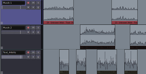 |
| Vorsortierte Musik und Texte auf drei Spuren |
In diesem Beispiel soll Musik in das Projekt eingebaut werden. Die einzelnen Dateien mit der Musik importiert man per Strg + I oder “Projekt -> Importieren“ in Ardour. Es empfiehlt sich, die einzelnen Musiktitel auf eine oder mehrere eigene Spuren zu legen, um mehr Freiraum zum Rangieren und Blenden zu haben.
Im Beispiel rechts liegen also z.B. auf Spur 3 die Autorentexte; für die Musik sind hier zwei Spuren reserviert: auf der Spur 1 liegen Musik 1 und 3, auf Spur 2 liegen Musik 2 und 4.
Plazierung der Musik im Detail¶
Jetzt hört man sich die erste Musik an und sucht die Stelle, an denen es sich gut anhört, das „Wort“ - also die Kombination aus Text und O-Tönen – darauf zu legen. Sämtliche Regionen eines Wort-Abschnitts markiert man und zieht sie en bloc (ohne also die Stellung der einzelnen Textteile zueinander zu verändern) mit und Mausziehen (exakt) an die betreffende Stelle.
| 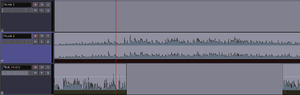 |
| Plazieren von Musik (oben) zwischen zwei Wortpassagen (unten) |
Dann die zweite Musik anhören: An welcher Stelle blendet man sie am besten ein? Die Musik so plazieren, dass sie zeitlich schon genau im richtigen Verhältnis zum Ende des vorhergehenden Wortteils steht.
Nun die Musik 2 weiter hören: Wo legt man den nächsten Wortteil darauf? Die Wort-Regionen markieren und wieder an die passende Stelle ziehen (s. Abb.). Analog weiter mit Musik 3, 4 usw.
Nach Abschluss dieser Plazierungen liegt also der Zeitablauf des Beitrags schon einmal fest. Womit auch der richtige Zeitpunkt gekommen wäre, die Gesamtlänge zu kontrollieren – um evtl. noch etwas am Ablauf zu korrigieren, Teile herauszunehmen oder auch Musik-Längen zu verändern. Nachdem das geschehen ist, die Gesamtlänge also feststeht, zieht man oben in der Zeile Positionsmarker die gelbe Markierung End exakt auf das Ende des Beitrages.
Lautstärke-Justagen an der Musik¶
Jetzt ist wieder das Ohr gefragt (und nicht nur der Blick auf die Pegelanzeige): Dem Höreindruck nach darf die Musik im Verhältnis zum Wort weder zu laut noch zu leise sein. Die Pegelangleichung für jedes einzelne Stück läuft in der Handhabung ab wie vorhin bei den O-Tönen. In diesem Schritt geht es wohlgemerkt nur um die Lautstärke der zwischen den Wort-Abschnitten „frei stehenden“ Musik.
| 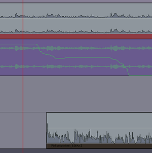 |
| Musik (oben) unter den Text (unten) geblendet |
Ein- und Ausblenden der Musik¶
Erst jetzt macht man sich an Mischen von Musik und Text. Musikspur 2 stummschalten, Musikspur 1 anklicken und im Spur-Fenster links wieder auf das Feld “a“ für das Menü “Automationen -> Fader“ drücken. Im Zusatzfenster unterhalb auf "Wiedergabe" klicken. Es klappt das Menü auf, in dem man von "Wiedergabe" auf "Schreiben" umschaltet.
Nun setzt man den Positionszeiger ein paar Sekunden vor die Stelle, an der die Musik unter den Text geblendet werden soll. Den Mauszeiger links auf den Pegelregler im Mixer-Panel links (oder im Mixer-Fenster) legen.
Dann mit einem Druck auf die Taste
die Wiedergabe starten. Wenn man jetzt an die „Blend-Stelle“ kommt, senkt man – nach Gehör natürlich – mit im Mixer-Panel den Pegel der Musik ab. Die Musik nun nach Gusto noch etwas unter dem Text liegenlassen und früher oder später ganz wegblenden.
Wenn die Musik weggeblendet ist, mit die Wiedergabe stoppen. Im Lautstärkekurven-Feld unterhalb der Hüllkurve erscheint die gerade gezogene Blende als Lautstärkekurve (s. Abb.). Der Positionszeiger springt im Modus "Auto Return" zurück an die Start-Stelle vor die Blende.
Jetzt die Automation von "Schreiben" wieder zurück auf "Wiedergabe" stellen. Dann die Blende probehören. Klingt sie noch nicht zufriedenstellend, wieder auf "Schreiben" schalten und den Blendvorgang wiederholen. Schöne Blenden brauchen anfangs durchaus etwas Übung.
Hinweis:
Besonders komfortabel ist es, bei diesen Arbeiten an Blenden und Automation die Option “Ändern“ zu nutzen. Allerdings können ältere Rechner mit dieser Funktion überfordert sein - entweder stürzt Ardour dann ab, oder die Automationslinie zeigt nach der Aufzeichnung starke Ausschläge nach oben und unten. Praktisch sollte man diese Methode also zunächst am eigenen Rechner testen, bevor man sie in einer Produktion einsetzt.
Das Einblenden der Musik 2 läuft auf umgekehrtem Wege: hier muss man den Positionszeiger schon dorthin setzen, wo Musik 2 noch nicht zu hören ist. Den Pegelregler der Spur 2 ganz nach unten ziehen. Dann Wiedergabe starten und mit dem Pegelregler die Musik an passender Stelle unter das Wort legen. Die Musik nach Wortende hochziehen, mit Beginn des nächsten Wortabschnitts wieder herunterblenden und schließlich ganz wegblenden.
Hinweis:
Das Blenden gestaltet sich mit Ardour 3, 4 und 5 noch einmal komfortabler, denn diese Programmversionen lassen sich besser als Ardour 2 mit externen MIDI-Steuerungspulten (sog. MIDI-Controllern) verbinden. Wie man das bewerkstelligt, erklärt der Ardour-Artikel des UU-Wiki.
Einarbeiten von Geräuschen¶
Mit dem Blenden von Geräuschen läuft es in der Handhabung wie mit der Musik.
| 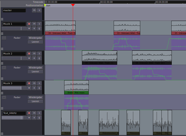 |
| Fertiger Beitrag mit drei Musikspuren (oben; einschließlich Blenden) und einer Wortspur (unten) |
Einbau von Plugin-Effekten in ein Projekt¶
Ardour bietet eine große Anzahl Effekte, die als Plugins entweder über das Ardour-Mischpult oder über JACKRack eingebunden werden können. Details dazu finden sich im Ardour-Grundlagenartikel. Dabei ist es auch möglich, Effektparameter zu automatisieren und zeitliche Änderungen aufzuzeichnen wie oben im Falle der Lautstärkeautomation beschrieben.
Export der fertigen Gesamtdatei¶
Nun zeigt der Bildschirm also eine Abfolge von Autorentexten und O-Tönen oder auch wie hier ein Geflecht aus handgeblendeten Musiktiteln, Geräuschen und Wortbestandteilen.
Das Ergebnis muss man jetzt nur noch aus Ardour exportieren – falls noch Spuren mit Roh-Aufnahmen des Interviews o.ä. im Projekt sind, dann sollte man sich überzeugen, dass diese stummgeschaltet oder deaktiviert sind, damit sie nicht mit exportiert werden.
Zum Export dient der Befehl “Projekt -> Exportieren -> Exportiere Projekt als Audio-Datei“. Ein Fenster erscheint, in dem man die Details bestimmen kann. Am wichtigsten sind:
Mono oder Stereo
Dateiformat (im allgemeinen empfiehlt sich ein unkomprimiertes Format wie WAV)
Abtastformat (16 Bit entsprechen CD-Qualität und dürften für Podcast- und Radiozwecke im allgemeinen ausreichen)
Rechts im Fenster sollte man drauf achten, dass bei Stereo-Audios beide Kanäle der Master-Spur aktiviert sind. Bei sehr langen Mono-Audios und knappem Speicherplatz kann es sinnvoll sein, nur einen Kanal ins WAV-Format zu exportieren, um Platz auf dem Datenträger (oder auch Datenvolumen beim Transfer) zu sparen. Allerdings sollte man sich vor dem Dateitransfer vergewissern, dass das Monosignal dann im Audiosystem des Empfängers auf beiden Kanälen zu hören ist.
| 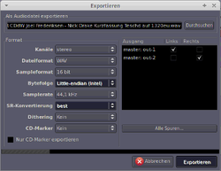 |
| Export-Fenster |
Hinweis:
Mitunter kann es sich lohnen, beim Export mit Dithering zu arbeiten, um evtl. digitale Unsauberkeiten im Klang zu vermeiden. Dreieckiges Dithering liefert erfahrungsgemäß gute Ergebnisse.
Die exportierte WAV speichert Ardour standardmäßig in einen Extraordner /export - wie oben im Fenster zu sehen. Bei Bedarf kann man sie hier noch vor dem Export oder später im Dateimanager anders benennen.
Beim Exportieren arbeitet Ardour recht zügig – fertig ist die podcast- oder sendefähige WAV-Datei.
Hinweis:
Auf älteren Systemen konnte Ardour 3 beim Export mehrspuriger Projekte mit Pegelautomation o.ä. mitunter die Rechenkapazitäten überfordern. Das Resultat waren Aussetzer oder Knackser in der exportierten Datei. Helfen konnte es hier, unterschiedliche Exportformate zu testen - gerade auch RIFF-WAVE mit 32-bit-Float. Mit Hilfe des Konvertierungsprogramms Soundconverter läßt sich die Datei anschließend in das gewünschte Format umwandeln. Schon unter Ardour 4 allerdings waren die Exportprobleme augenscheinlich behoben; Ardour 3 ist somit auch in dieser Hinsicht technisch überholt.
Vorbereitung für den Dateitransfer¶
Für den Online-Transfer zum Empfänger kann es nötig sein, die WAV-Datei noch in das MP3-Format umzuformen (Ardour kann MP3-Dateien aus rechtlichen Gründen nicht direkt exportieren.) Sehr gut geeignet auch hierfür ist der Soundconverter. Dabei sollte man mit der Bit-Frequenz im Interesse des guten Klangs großzügig umgehen: mindestens 224 kBit/sek sollten es sein, noch besser sind 256 oder 320 kBit/sek. Mitunter gibt es darüber hinaus seitens der Datei-Empfänger die ausdrückliche Aufforderung, statt der variablen Bit-Tiefe (wie sie z.B. bei kommerziell herunterzuladenen MP3-Dateien verbreitet ist) auf eine feste zu schalten.
Zur Frage der Ardour-Tonqualität¶
Bei einem Probehören einer aus Ardour exportierten WAV und der durch Soundconverter erzeugten MP3 durch zwei ARD-Toningenieure in ihrem Studio gab es keine Beanstandungen. Ardour dürfte also hinsichtlich seiner Klangqualität auch für die professionelle Studioarbeit ohne Einschränkung tauglich sein.
Links¶
Intern¶
Ardour - Grundlagen
Soundsystem - Grundlagen zum Audiosystem
Tonstudio - Einführungsartikel
JACK - Grundlagenartikel
JACK/Grafische Konfiguration - Ergänzung zu grafischen Werkzeugen rund um JACK
Asunder - graphisches Programm zum Auslesen von Audio-CDs
Audiodateien umwandeln - Grundlagenartikel über unterschiedliche Möglichkeiten, Audioformate umzuwandeln
Extern¶
Ardour: umfassende Projektseite mit Anleitungen, Downloads, Support, Entwicklerrubriken, Forum etc.

Praktisches Beispiel zum Abmischen eines Ardour-Projektes in einem kalifornischen Studio
Seite zu Ardour 4 mit angeschlossenem kleinem Handbuch, auch für Ardour 5 brauchbar

Zweiteiliger Demonstrationsfilm über die Musikproduktion mit Ardour 3
Dreiteiliger Demonstrationsfilm zur Musikproduktion mit Ardour 2
Umfangreiche Internetseite zum Einsatz von Linux im Audio- und Musikproduktionsbereich
Opensource Audioworkstation
Tutorial über die Einrichtung eines professionellen Tonstudios einschließlich Ardour mit freier Software
- Erstellt mit Inyoka
-
 2004 – 2017 ubuntuusers.de • Einige Rechte vorbehalten
2004 – 2017 ubuntuusers.de • Einige Rechte vorbehalten
Lizenz • Kontakt • Datenschutz • Impressum • Serverstatus -
Serverhousing gespendet von